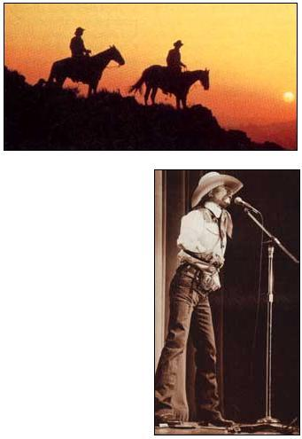
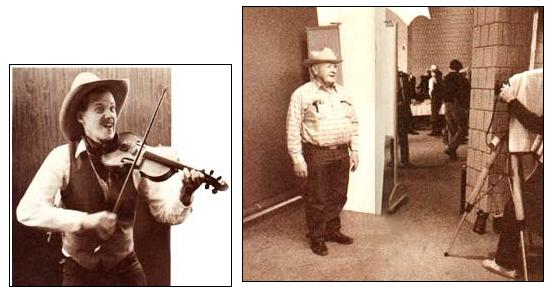
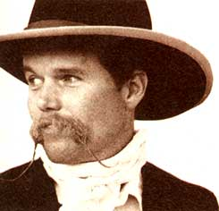

Rule number one:
out loud or not at all.
"Everyone wants to
find some deep meaning here.
What it is
is a hell of a lot of fun."
-Waddie Mitchell on the
Cowboy Poetry Gathering
FOR EVERY COWBOY POET THERE'S A folklorist who will tell you, at length, all about the cowboy poet: "A cowboy poet is the heroic silhouette on the horizon whose inspirations burble forth from a warm spring within.
"Given another 12 hours alone on the prairie, the cowboy poet can't help but reshuffle and commit to memory an assortment of rustic observations to celebrate bad food, wet ground, ornery cows and pay even lower than a teacher's. Every other line rhymes. That's why they're called poems. The fact that the rhythm of his new ditty mimics the clip-clop of a weary horse is fraught with significance."
A poet in the sagebrush; a mystery up to his knees in enigma: It's hard to imagine a more romantic American ideal. That's why it is with anguish felt deep in my gizzard that I must warn you that 90% of all cowboy poems are no diferent than other forms of Western art. They're sentimental. Maudlin. Gooey.
Not that it matters. The other 10% make it all worthwhile. Besides, cowboy poetry per se doesn't play that big a role in the annual Cowboy Poetry Gathering. What we have here is the keenest long weekend this side of the Mississippi-72 hours straight (and climbing) of world-class joke-mongering, storytelling, lie-swapping and guitar-banging. As musician Ranger Doug says, "There's only one thing this gathering doesn't have: sleep."
I'm here to tell you that the Cowboy Poetry Gathering is one of the funnier events on earth and that no other event this funny is as picturesque. In a world of screaming maniac comedians spouting PMS jokes, cowboy poets are oases of subtlety. Where else these days can you find understatement, irony, honesty, gentle wisdom and free admission, all under one roof?
Cowboys retain a certain American value in that they hide their true feelings behind a facade of humbleness and shyness. Despite appearances, however, they do take themselves seriously. It's hard not to when a documentary film crew moves in on your ranch every other year. What other breed can recite poetry without being the typical sensitive (read: simpering, mewling) male of the '80s? As one cowboy poet said to another, "I know you want me to be impressed, Jim, but I want you to know: I've heard ducks fart underwater."
Fate made me stumble upon the first Cowboy Poetry Gathering. It was 1985. Driving between here and Timbuktu, we stopped in Elko, Nevada, solely for its excellent Basque restaurants. Lo and behold, we were smack dab in the midst of hundreds of real cowboys, men and women whose cowboy hats and cowboy boots had been beaten into authenticity by real cows. For good measure, there was a woman wearing genuine Fannie Sperry Steele 1912 Ladies Bucking Bronc chaps.
By nature I am neither a cowboy nor a poet nor a gatherer, but Elko's atmosphere was rife with straight-shooting versifiers with a colorful outlook. This cowboy, see, was riding along (blah, blah, making a long story short), and there he was hanging over a cliff with one hand clinging to a bush.
"Somebody please help!" he screamed.
"Do you have faith in me?" a voice said. It was God. Yes,
I do, Lord. Now, save me."
"You must have faith in me," said the Lord. "Let go of the bush."
A pause. Then the cowboy hollered, "Can anybody else hear me?"
All right, so you had to be there.
I was, and haven't missed the Cowboy Poetry Gathering since. (And yes, I know that wasn't a poem.)
I begged Wally McRae, perhaps the most daring of the current breed of cowboy poets, for a copy of his "Put It Back Hoedown," a brilliant performance piece about greed, politics and the environment. (Had McRae performed it anywhere other than Elko, "Put It Back Hoedown" would have been heralded as a landmark: cowboydom's first rap song.) He flat refused. "It just doesn't work on paper," he said.
The finest cowboy poems rarely cut it on the printed page. They must be recited the way they are written, from the noggin, with feeling. They're like fine wine. They must breathe, especially if they've been bottled up too long.
Baxter Black is the only cowboy poet who can actually make a living at it. (Cowboy singer Glenn Ohrlin, whom you may have heard on "A Prairie Home Companion," also does pretty well. "One singing will support two cows for a year," he says.) Black is a humorist of the first order and a dynamic speaker. His satirical "Vegetarian's Nightmare" is the beef-grower's answer to those who insist that plants are more deserving to die than cows:
Then laying my hand on a radish
I jerked and it left a small crater.
Then with the blade of my True Value spade
I exhumed a slumbering tater.
Black's poem, 12 stanzas of brutal salad-prep imagery, isn't worth printing in full because it would look silly. You need Black's deliv ery, a hilarious fit of mounting Gothic horror, in order to get the full impact.
Hal Cannon came to love cowboy poetry while seeking to preserve "the oral tradition" by recording old-timers for the Smithsonian Institution. Cannon dabbled with the idea of organizing such a gathering for 10 years. By the time the Cowboy Poetry Gathering came to fruition, it was set not in Cheyenne or Salt Lake City but "in the middle of winter, in the middle of nowhere."
Cannon's intentions could not have been nobler. If ever a ranch has downtime, late January would be the time. It's no secret that ranching, traditionally a troublesome occupation at best, has been sheer misery of late; if nothing else, the Cowboy Poetry Gathering would give ranchers a chance to cheer one another up. Having it in Elko, with its wide open spaces (the gorgeous Ruby Moun tains as well as an extraordinarily well-designed convention center), its 24-hour getloose atmosphere (this is Nevada, now) and its geographical proximity (it's less than a day's drive from most ranches in the West) meant that the Cowboy Poetry Gathering would be an event real cowboys could call their own.
Nonetheless, the Eastern Seaboard press and European filmmakers have had little difficulty finding their way to Elko. If numbers are the way to measure it, the Cowboy Poetry Gathering has become a phenomenon. Organizers figure that last year some 7,000 people showed up over the course of the weekend. Attendance had been growing steadily, but this was the first year that tourists seemed to outnumber cowboys. (The most conspicuous critters, however, were the pseudo-Avedon photographers with large format cameras, pushing genial but skittish cowboys up against artificial backdrops.)
For three days, from 9 A.M . till dinner, four or five poetry/music/film/video/seminar sessions take place simultaneously. For three nights, a 900-seat hall is packed for a variety show. Yodeling dogs, Hawaiian (!) cowboys, rope-dancing vaqueros-it could be anyone doing anything. One year Jerry Jeff Walker walked on, sang a couple of songs, yelped like a coyote and vanished. But he didn't get as big an ovation as Ramblin' Jack Elliott the year before.
It's close to midnight when the evening shows end. And that only marks the beginning of the all-nighter in downtown Elko. The Stockmen's hotel and casino has a huge upstairs conference room normally reserved for meetings of the Amalgamated Society of Manifold Associations. This is where a horde of folk-music lovers congregates while approximately 50 guitars, 18 banjos, 12 fiddles, three standup basses and a kazoo form ever-shifting clusters of impromptu bands.
Then it's breakfast and you start all over again.
Thankfully, the more popular poets have yet to be tossed into the national media's instant-celebrity grinder. (Although Johnny Carson does make it a point to feature the likes of Waddie Mitchell, Baxter Black and Gwen Petersen each year prior to the Gathering.) There are quite a few books on the shelves-the first cowboy collections to be published since the 1930s-and even more self-published volumes. But overall sales aren't burning down any barns. For now, the sport remains safe.
The fifth annual Cowboy Poetry Gathering is set for January 25-28. With a gold mining boom taking place, rooms in Elko are already at a premium. Everything was booked 11 months in advance. I can't think of a cowboy who cares to book a room a week in advance, much less a year. Will there be a Cowboy Poetry Gathering without cowboys? My hunch is that a good many of those rooms vanished under the wing of an angel who will yield them to the worthy in timely fashion.
Editor's Note: If you want to attend the Cowboy Poetry Gathering, Elko's chamber of commerce will send you a bundle of info.
Colder Than a Banker's Handshake
Jake, it's time for a chat.
I'm just reviewing your loan.
I would have come over or give you a call
But they told me you took out your phone!
Remember the audit in '80?
Your books were a flippin' disgrace!
I lent you enough for an adding machine
But you bought a new horse in its place!
And the flood of '75.
You said it was good for the grass.
Jake's Frog and Fish Farm; I extended the note.
You went in hock clear up to your bass!
I've financed your crazy ideas;
The turkeys, the comfrey and more
The Christmas tree venture, the miracle fence
And the tourist trap with the dinosaur!
I wrote off the gold mine
And the trained buffalo.
When you went to Amway, I bought all your soap!
Then absorbed the loss on your Wild West Show.
I've stuck by you, Jake,
Through thick and thin
On each crazy notion that came in your head
But this latest request is the end!
I can't take the risk.
It can't be allowed.
How do you think a bank can break even
Makin' a loan on a set of ol' cows!
By Baxter Black
(From On the Edge of Common Sense, by Baxter Black. ©1983 by Record Stockman Press, 4800 Wadsworth Blvd., Wheatridge, CO 80033.)
Now there's got to be a reason,
(Although I'm not sure why)
Whenever he is seen or heard
A rattlesnake must die.
Some rumor of a calf or colt
Who died back in the past,
Dictates to all: this creature must
Be killed-a vile outcast.
Or the taint from Eden's Garden
Residual in man's mind,
Sans jury, judge, or legal aid,
Says, "kill," to all mankind.
For years I've packed their rattles home,
And filled a Mason jar.
`Cause I've never ridden by them,
Or left them where they are.
But some day when no one's looking
My reason will hold sway,
And I'll bid a rattler, "Howdy,"
And grin and ride away.
By Wallace McRae
(From Up North is Down the Crick, ©1985 by Wallace McRae. Published by Museum of the Rockies, Montana State University, Bozeman, MT 59717-001)
Though you're not exactly blue,
Yet you don't feel like you do
In the winter, or the long hot summer days.
For your feelin's and the weather
Seem to sort of go together,
And you're quiet in the dreamy autumn haze.
When the last big steer is goaded
Down the chute, and safely loaded;
And the summer crew has ceased to hit the ball;
When a feller starts a draggin'
To the home ranch with the wagon,
When they've finished shippin' cattle in the fall.
Only two men left a standin'
On the job for winter brandin'
And your partner he's a loafin' at your side.
With a bran' new saddle creakin',
Neither one of you is speakin',
And you feel it's goin' to be a silent ride.
But you savvy one another,
For you know him like a brother,
He is friendly but he's quiet, that is all;
He is thinkin' while he's draggin'
To the home ranch with the wagon,
When they've finished shippin' cattle in the fall.
And the saddle hosses stringin'
At an easy walk a swingin'
In behind the old chuckwagon movin' slow.
They are weary, gaunt and jaded
With the mud and brush they've waded,
And they settled down to business long ago.
Not a hoss is feelin' sporty,
Not a hoss is actin' snorty;
In the spring the brutes was full of buck and bawl;
But they're gentle, when they're draggin'
To the home ranch with the wagon,
When they've finished shippin' cattle in the fall.
And the cook leads the retreat
Up there on his wagon seat,
With his hat pulled way down on his head.
Used to make that old team hustle,
Now he hardly moves a muscle,
And a feller might imagine he was dead.
'Cept his old cob pipe is smokin'
As he lets his team go pokin'
Hittin' all the humps and hollers in the road.
No the cook has not been drinkin',
He's just settin' there and thinkin'
'Bout the places and the people that he knowed.
You can see the dust a trailin'
And two little clouds a sailin',
And a big mirage like lakes and timber tall.
To the home ranch with the wagon,
When they've finished shippin' cattle in the fall.
When you make a camp that night,
Though the fire is burnin' bright,
Yet nobody seems to have a lot to say.
In the spring you sung and hollered,
Now you git your supper swallered
And you crawl into your blankets right away.
Then you watch the stars a shinin'
Up there in the soft blue linin'
And you sniff the frosty night air clear and cool.
You can hear the night hoss shiftin'
And your memory starts a driftin'
To the little village where you went to school.
With its narrow gravel streets
And the kids you used to meet,
And the common where you used to play baseball.
Now you're far away and draggin'
To the home ranch with the wagon,
When they've finished shippin' cattle in the fall.
And your schoolboy sweetheart, too,
With her eyes of honest blue,
Best performer in the old home talent show.
You was nothin' but a kid
But you liked her, sure you did
Lord! And that was over thirty years ago.
Then your memory starts to roam
From Old Mexico to Nome,
From the Rio Grande to Powder River,
Of the things you seen and done,
Some of them lots of fun
And a lot of other things they make you shiver.
'Bout that boy by the name of Reid
That was killed in a stampede,
'Twas away up north you helped to dig his grave.
And your old friend Jim the boss
That got tangled with a hoss,
And the fellers couldn't reach in time to save.
You was there when Ed got his'n
Boy that killed him's still in prison,
And old Lucky George is rich and livin' high.
Poor old Tom, he come off worst,
Got his leg broke, died of thirst,
Lord but that must be an awful way to die.
Then them winters at the ranches,
And the old time country dances,
Everybody there was sociable and gay.
Used to lead 'em down the middle
Jest a prancin' to the fiddle
Never thought of goin' home till the break of day.
No there ain't no chance for sleepin',
For the memories come a creepin',
And sometimes you think you hear the voices call;
When a feller starts a draggin'
To the home ranch with the wagon,
When they've finished shippin' cattle in the fall.
By Bruce Kiskaddon
(From Cowboy Poetry: A Gathering, ©1985 by Gibbs Smith, Publisher, P.O. Box 667, Layton, UT 84041)
|
 Baxter Black, poet, author, comedian and veterinarian, manages to make a living doing all the above. |
 Right: A lot of photographers come, but there are still more cowboys. Below: All-night music keeps 'em wide-eyed. |
 cowboy poet Waddie Mitchell. |